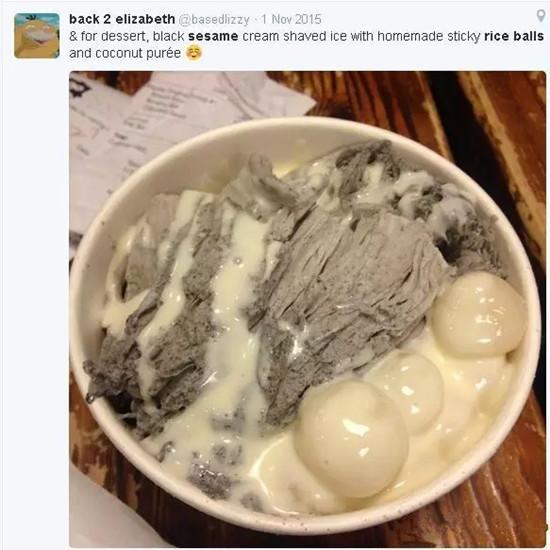
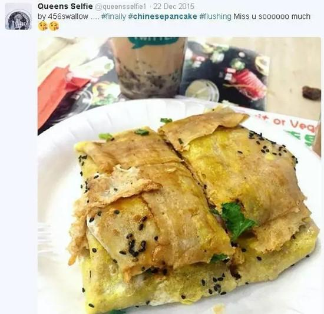
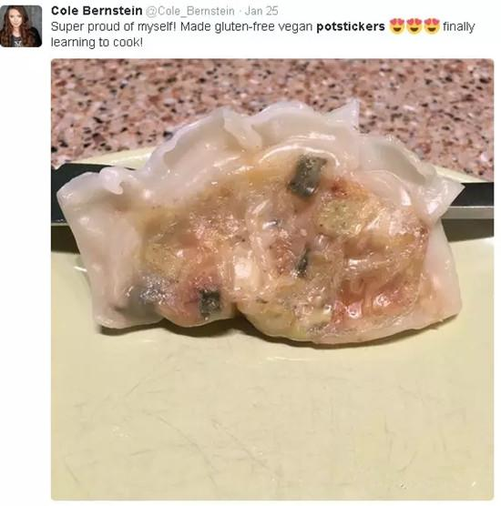

其实在很多外国人的眼里，天朝一直是一个神秘的国度…以前很多人认为中国人都会功夫…所有的人都会点穴……其实也不假，我们的确都会做眼保健点穴操不是么。更奇葩的是，在早期的西方，推理小说作者圈里有一条原则：最后的幕后罪犯一般不得是中国人……因为那个时候的普遍认知是中国人会法术，会奇门遁甲，不符合推理小说要求的严谨逻辑……不过，在外国人眼里，中国人已经不那么神秘了，真正神秘的，是那些只会在中国get到的美食体验。
你们感受下这些外国人平常来中国之后po的那些朋友圈！
“又香又辣的面条才是理想中的早餐啊...”
“芝麻汤圆好吃的甜点~”
“ 这才是蛋挞的奥义啊”
